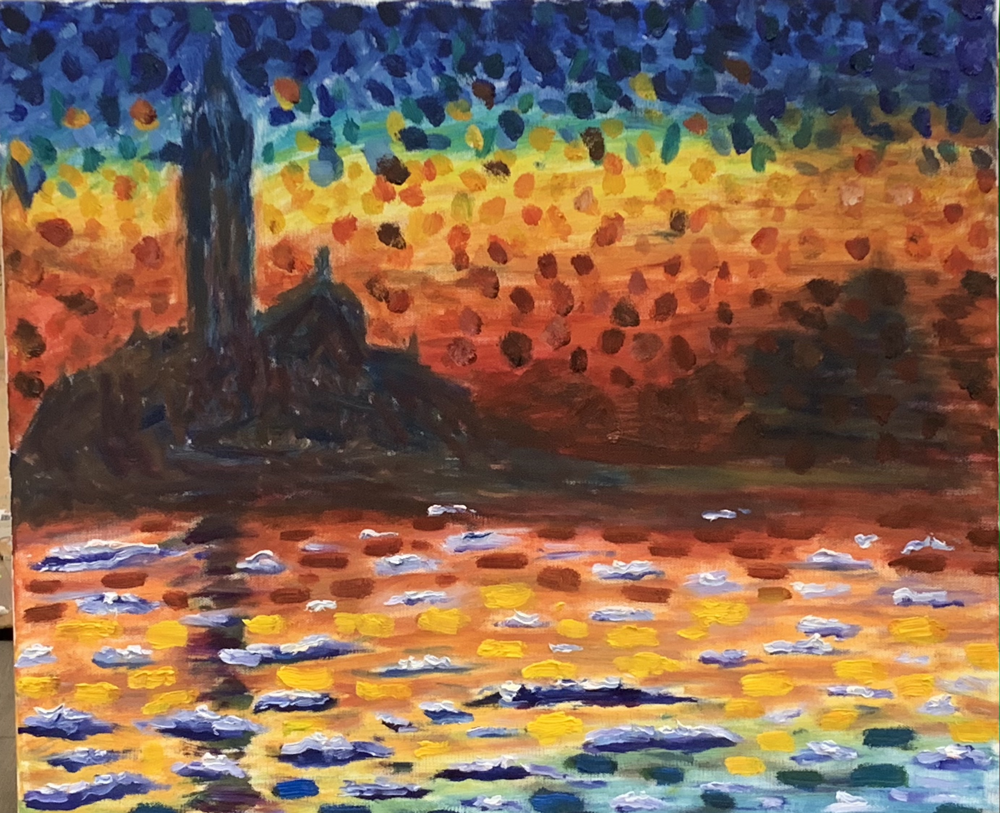
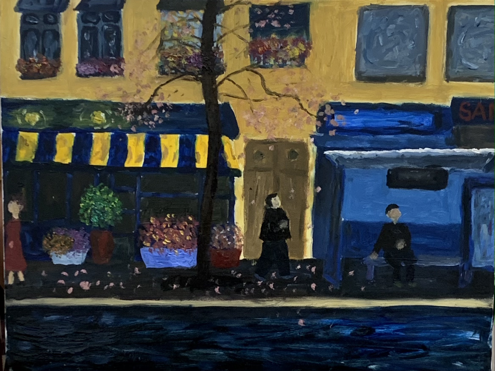
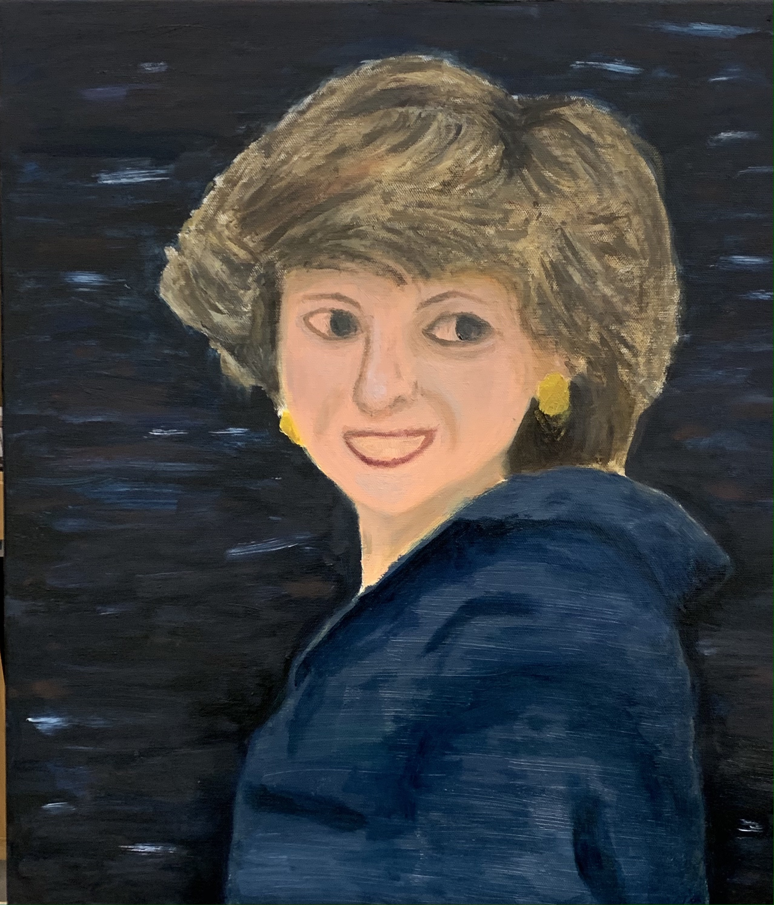
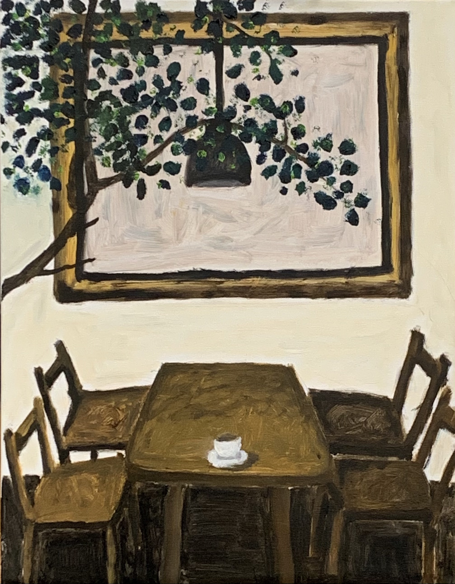

Oil Painting
San Giorgio Maggiore at Dusk 晨曦中的聖喬治
This is my first try at oil painting, which I mocked one of the most famous works from my favorite painter, Claude Monet. Claude Monet was a French artist, and many his works of art are in famous museums today. I really love the way Monet portraits light and shimmering reflections in the water. When I look at it, I have to stand at a distance to really understand what he was painting. Up close it may look only like blotches of paint, but as I move back, I can enjoy the scene and the silence in the painting.
"People discuss my art and pretend to understand as if it were necessary to understand, when it's simply necessary to love." -- Claude Monet
這是我第一次嘗試油畫，選擇臨摹了我最喜歡的畫家Claude Monet最著名的作品之一。Claude Monet是一位法國藝術家，他的許多藝術品都在著名的博物館中展出，我最愛他對於水中光線和微光反射上的細微描繪，當我近看，它或許只是一小塊顏料，但是當我往後退欣賞時，可以盡情地感受到場景中的景象和其帶來的寂靜。Monet曾說過他不需要人們真正懂他的作品，只希望能愛護並多花時間細細欣賞它。
Reflection 倒影
It’s raining. Men walk in frock coats and top hats, women in heavy, fur-lined dresses. They protect themselves from the rain with umbrellas, whose interplay of grey curves provide much of the visual drama of the scene. What does rain mean to you? The first thing that always strikes me about rainy day is the reflection on the ground. It’s like a mirror for people who walk by, and gives them the reasons to enjoy the rain and also life.
下雨了，男人穿著夾克和高頂禮帽，女人穿著厚實的毛皮與連衣裙，展開雨傘讓自己免受雨淋，雨傘的灰色曲線在街道上連成一條無盡的線，這是我對於下雨天的想像，雨對你來說意味著什麼呢？它對我來說是迷人的，因為地面上的倒影總是吸引著我的目光，倒影就像一面鏡子，望著匆忙經過的路人，希望人們能多看它們兩眼，並忘記生活的煩躁，短暫地享受下雨的魅力。
The story of Diana 黛安娜王妃
This is the portrait of Princess Diana. The latest season of "The Crown" has made me talk about Princess Diana again. For me, she is just like the brightest star in the sky which is beautiful but lonely. She was famous for many things. She was a wife, a mother, a friend, and a humanitarian. I think her inner beauty is what makes her so special that changed the way the world viewed the royal family. She was warm and welcoming to everyone she met, just like a sunshine. Whether they were just commoners or extremely poverty-stricken families in Africa, Diana had never carried herself as if she thought she was better than anybody.
這是黛安娜王妃的肖像畫。 最近一季的《王冠》使我再次認識以及懷念黛安娜王妃。對我來說，她就像天空中最亮的星星，優雅地閃耀但隱約流露著孤獨。 她因許多事情而聞名，她是個嫁入皇室的妻子，十分疼愛孩子的母親，以及英國人民的朋友和積極的人道主義者，她的內在美徹底改變了當時世界對王室的想法， 她對待每個人的熱情慷慨，使她像陽光一樣，溫暖世人，無論是非洲的平民百姓還是極度貧困的家庭，黛安娜從未認為自己比任何人都要高貴，以最平等的眼光看待每一個遇到的人。
Tranquility 靜
With the unprecedented impact that coronavirus is currently having on the whole world, we are all experiencing a pace of change that is rapid, disruptive, overwhelming and, at times, exhausting. I often feel like a fish out of water in this highly unusual situation of rapid change and uncertainty. It seems that every aspect of our lives is changing quickly, including the way we work, the way we talk, the way we shop, eat and entertain ourselves. Life as we know it is starting to become extremely different and we are all being asked to get used to it in the ways that may feel really chaotic, confusing and frustrating. Therefore, when I drew this painting, I want to create a sense of tranquility for myself. In other words, to adapt this rapidly changing world right now, every person should have their time to enjoy tranquility which is really neccessary and important to our mind.
由於這次疫情對世界，帶來史無前例的影響，我們都正在經歷著快速且巨大的改變，同時也令人感到混亂及疲累，有時候，我常覺得自己像隻，在極為不安且不確定的情況下，魚缸裡游泳的魚，生活裡所有習以為常的事，都隨之改變了，像是工作模式、交談方式、購物習慣、食衣住行育樂等，都變得如此的不同，然而，我們卻得強迫去接受並習慣這一切，如此的瘋狂、混亂、挫折，因此，當我在創作這幅畫時，我想要為自己創造一個寧靜的力量，在現在這快速變化的世界，每個人都應該去享受靜的力量，因為其對於我們心靈，是極為必須且不可或缺的。
If 如果

I’m 21 years old. I’m crazy about old song. I can’t stand the autotune mess of modern music that young people like nowadays. Some of my favorite songs are old, like really old, even as far back as the 1940s. My friends always say, “You’re definitely not a normal teenager since you like every out-of-fashion thing.” And, I admit it. I was listening one of my favorite old song, “If” by Bread, while drawing this work. “If a picture paints a thousand words. Then why can't I paint you? The words will never show the you I've come to know.” The lyrics deeply touched my heart. Sometimes love is so hard to explain by words because it isn’t exclusive to any one person, and it never has, or ever had, a definitive start or an end.
我今年21歲，是個典型的老歌狂熱者，常常無法忍受最近年輕人喜愛的音樂。我的音樂收藏都是老歌，有些真的很老，甚至是1940年的歌曲，離我出生還有一大段時間。我的朋友常說：「你真的不是一個正常的年輕人，因為你喜歡所有過時的東西。」對，我承認。當我在畫這幅畫的時候，邊聽著來自麵包樂團1970年的作品<如果>，這是我其中一首愛歌。「如果畫能繪出千言萬語，為何我無法彩繪出你的想像呢？千言萬語無法描繪，我所認識的你。」歌詞深深地打動我，愛有時候真的無法解釋，因為那是關於你和我的故事，從來沒有一個官方定義的開始或結束。